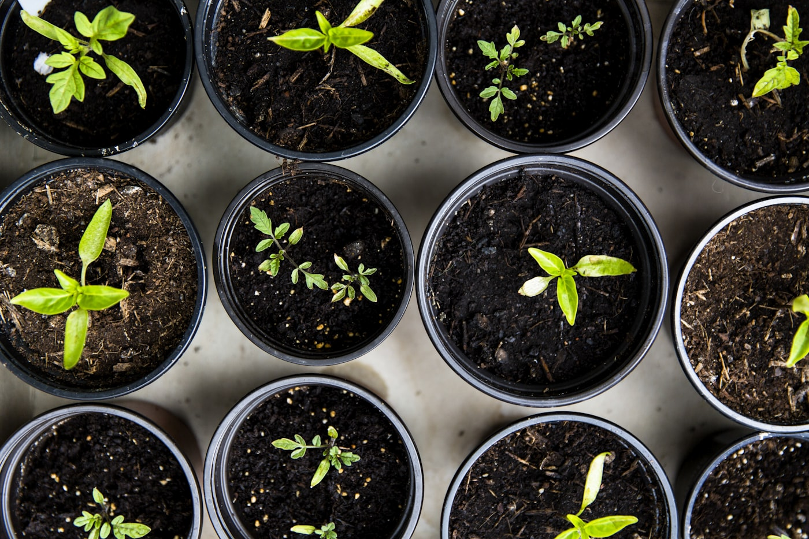
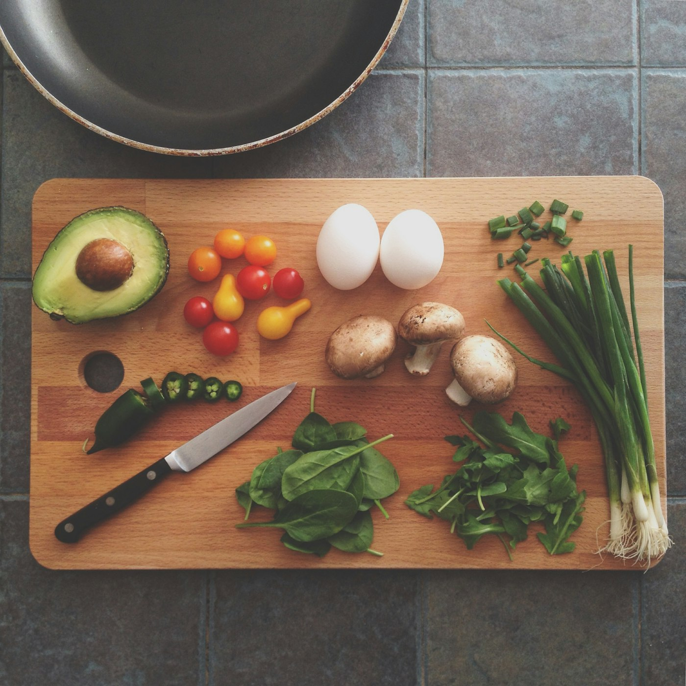
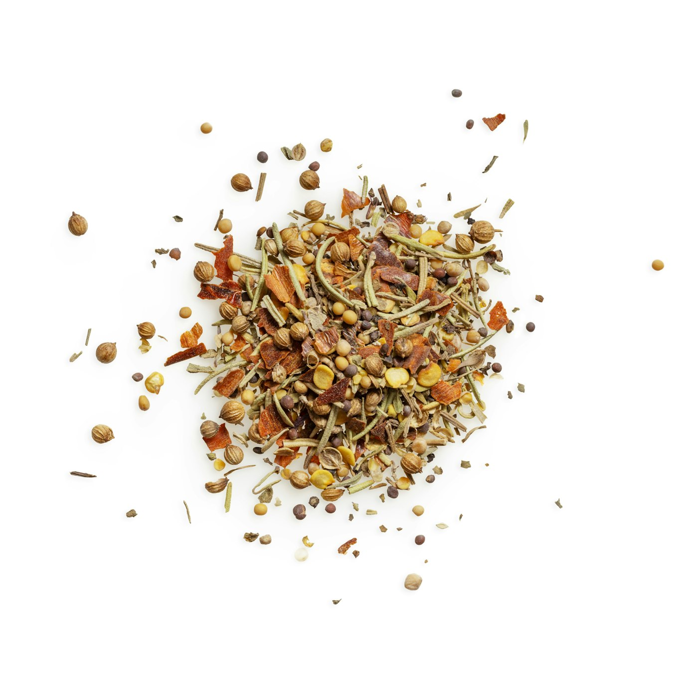
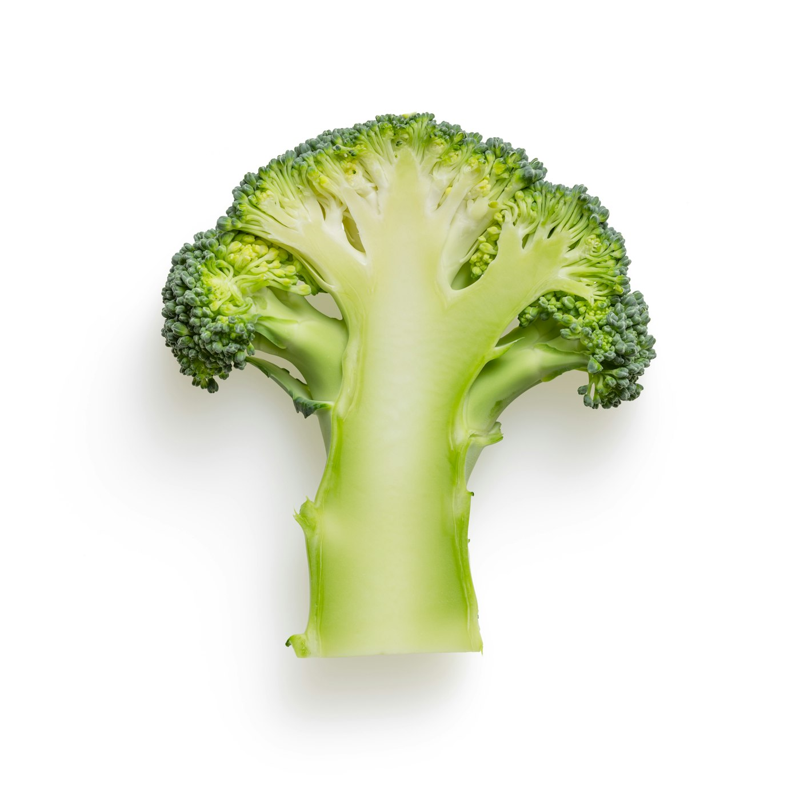
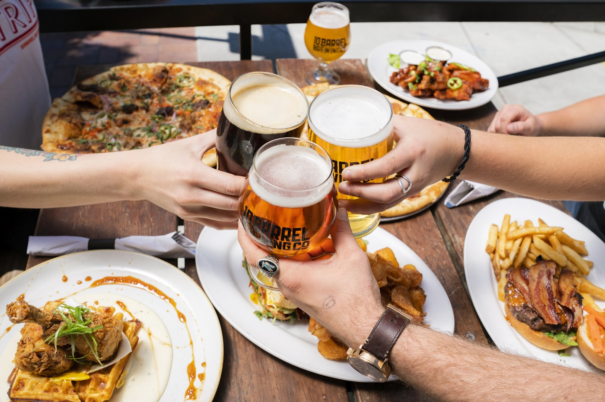
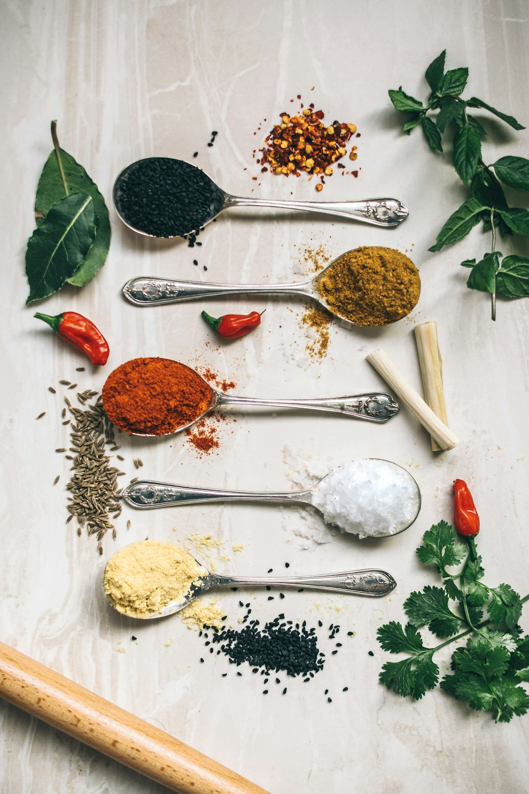
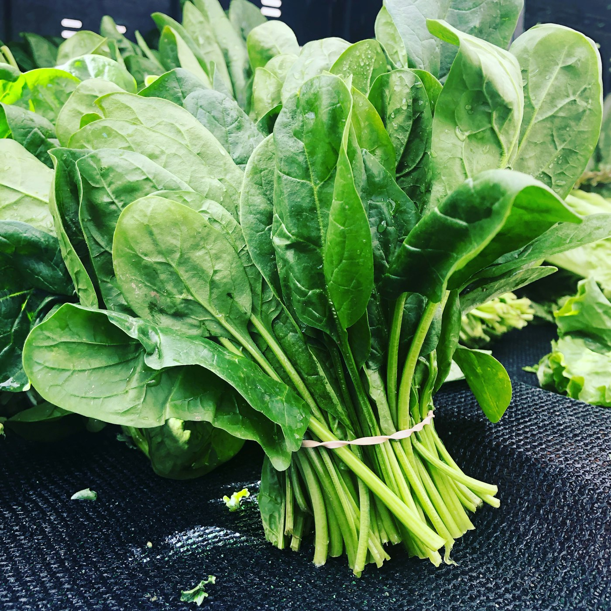

Langsung dari Petani
Kemitraan langsung dengan petani Jawa Barat — hasil panen terbaik tanpa perantara, petani mendapat harga yang adil.

PT Jiwa Parahyangan Sejati menghadirkan rempah-rempah dan tanaman herbal asli Indonesia dengan kualitas premium — ditanam petani, diolah dengan standar ekspor, untuk pasar dunia.


Berbasis di Bogor, Jawa Barat — jantung kawasan Parahyangan yang kaya akan hasil bumi — PT Jiwa Parahyangan Sejati fokus pada penyediaan dan ekspor rempah-rempah & tanaman herbal asli Indonesia dengan kualitas premium untuk pasar internasional.
Kemitraan langsung dengan petani Jawa Barat — hasil panen terbaik tanpa perantara, petani mendapat harga yang adil.
Setiap lot dapat ditelusuri hingga kebun dan petani asalnya — transparansi penuh di seluruh rantai pasok.
Kemitraan yang adil dan berkelanjutan dengan komunitas petani lokal, mendukung kesejahteraan desa.
Praktik pertanian yang menjaga kesuburan tanah dan keberlanjutan pasokan untuk jangka panjang.
Sortasi, pengeringan, dan pengemasan higienis sesuai standar ekspor internasional.
Seleksi ketat pada setiap tahap — hanya produk dengan aroma, rasa, dan kandungan terbaik yang dikirim.
Setiap produk melalui sortasi, pengeringan, dan pengemasan higienis sesuai standar ekspor.
Rimpang besar dengan aroma lembut — primadona ekspor untuk bumbu, minuman, dan industri pangan.
Export GradeKandungan oleoresin tinggi — favorit untuk herbal, obat tradisional, dan minyak atsiri.
Export GradeKurkumin tinggi, warna alami cerah — untuk bumbu, pewarna, suplemen, dan kosmetik.
Export GradeRimpang emas khas Nusantara — jamu tradisional, hepatoprotektor, dan industri farmasi.
Export GradeAroma harum khas — rempah bernilai tinggi untuk kuliner, parfum, dan pengobatan.
Export GradeEugenol tinggi — rempah ikonik Indonesia untuk bumbu, rokok kretek, dan minyak atsiri.
Export GradeKulit kayu manis aromatik — bumbu dunia, bahan bakeri, dan suplemen kesehatan.
Export Grade"Raja Rempah" — piperine tinggi, permintaan dunia tak pernah surut. Tersedia hitam & putih.
Export GradeCitral tinggi — bumbu dapur sekaligus bahan minyak atsiri dan minuman herbal.
Export GradeSuperfood nutrisi tinggi — daun kering kaya vitamin, untuk kesehatan dan industri pangan.
Export GradeEmpat tahap yang menjaga kualitas dari petani hingga tiba di pelabuhan tujuan.
Bekerja langsung dengan petani Jawa Barat — panen terbaik, harga adil, pasokan berkelanjutan.
Pemilahan ketat berdasarkan ukuran, tingkat kematangan, dan kebersihan produk.
Pengeringan higienis yang menjaga aroma, warna, dan kandungan aktif produk.
Pengemasan sesuai standar ekspor, traceable per lot, siap dikirim ke pasar internasional.






Kami terbuka untuk penawaran ekspor, kemitraan petani, dan kerja sama B2B internasional.
Isi formulir berikut — tim kami akan merespons dengan penawaran terbaik.
Kualitas premium, rantai pasok yang bisa dipercaya, dan kemitraan yang adil — mulai dari satu penawaran.
Mulai Kerja Sama